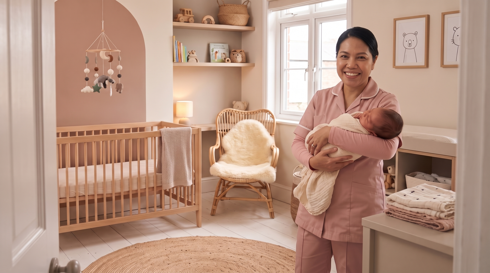

About
The Postpartum Suite was founded by Amidat Olowu, who received postpartum care herself after the birth of her own children.
Founder's Story
Amidat Olowu founded The Postpartum Suite after receiving postpartum care herself, and recognising how much her own recovery depended on being properly looked after in the weeks following birth. She built the company so other mothers could have the same support.
Note for Amidat
This section needs your own words. The specifics of your experience, who cared for you, and what led you to start the business are the most important part of this page, and should be written in your own voice before it goes live.
What We Believe
Everyone asks how the baby is doing. Very few people ask how the mother is healing. The Postpartum Suite exists to care for the mother as seriously as the baby, rooted in Malaysian confinement tradition and adapted for how families live today.

Areas We Cover
The Postpartum Suite currently serves London.
Note for Amidat
The exact boundaries of the service area, and whether care outside London is available on request, need to be confirmed before this section is finished.
Contact
To talk through your dates and what you need, book a free consultation call.
- info@thepostpartumsuite.com
- @thepostpartumsuite
- Phone
- To be confirmed
- To be confirmed